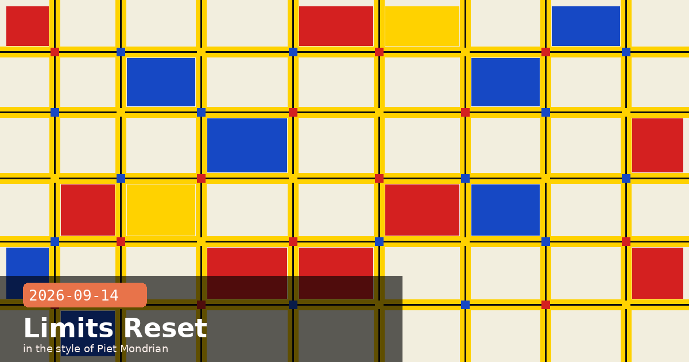

Limits Reset, Smart Reports Beta, and ant apply IaC

🧭 Claude Code Limits Reset Today: The +25% Is Permanent, but It Replaced a +50% — Here Is the Actual Math
Today, September 14, Anthropic's five-month temporary 50% weekly usage boost for Claude Code expires, and the permanent 25% increase takes its place. Anthropic has framed this as a permanent uplift — and structurally it is — but the practical effect for anyone who has been using Claude Code since May is a 17% reduction in what they can do this week versus last week. The community flagged the framing gap and Anthropic's own employees acknowledged the messaging could have led with the net change.
The arithmetic, clearly
Original baseline weekly allowance: call it 100 units.
Temporary +50% boost (in effect since May 2026): 150 units.
New permanent +25% baseline (effective today): 125 units.
Change from what you had yesterday: −17%.
The temporary boost was extended repeatedly — through mid-July, then July 19, then August 19, then August 31, then September 13. Users who stretched their workloads to fill the 150-unit envelope will need to trim. Users who never hit the ceiling will notice nothing.
The partial offset: auto mode classifier calls are now free
In the same announcement, Anthropic confirmed that auto mode's background permission classifier no longer counts against weekly usage limits on Pro, Max, and Team plans. Auto mode routes every tool call through a safety classifier before executing it — previously those classifier API calls consumed the same quota as any other turn. They no longer do. For users who run Claude Code in auto mode on long agentic sessions with many tool calls, this partially offsets the raw limit reduction. The exemption applies immediately and requires no configuration change.
What to check right now
If your Claude Code sessions regularly approach the weekly ceiling, do two things. First, run /status in a Claude Code session to see your current weekly usage. Second, evaluate whether the work patterns that were filling your 150-unit allowance can be restructured — for example, by consolidating multiple short sessions into fewer, denser ones, or by routing high-volume automation through the API directly (which has separate rate limits). The limit change is permanent; it will not be boosted again for the foreseeable future.
Claude Codeusage limitsweekly quotaauto modepermission classifierProMaxTeam
🧭 Claude Enterprise Gets Smart Reports: AI-Written Usage Analytics That Surface Costs, Friction, and Reusable Patterns
Anthropic has launched Smart Reports in beta for Claude Enterprise customers. Rather than exposing raw usage dashboards, Smart Reports generates a narrative AI-written analysis of how an organisation actually uses Claude — covering what kinds of work dominate, what each category costs, where sessions run into repeated friction, and which repeated workflows are good candidates for packaging as shared skills. The feature covers Claude chat, Claude Code, and Claude Cowork, with a look-back window of up to 28 days.
What a Smart Report covers
Usage breakdown by work type: Categorises sessions into coding, writing, research, analysis, and other buckets automatically.
Cost per category: Shows token cost disaggregated by work type and by team, group, department, or cost center — scoping is flexible.
Friction signals: Surfaces common failure patterns in aggregate — connector failures, rework loops, tool errors, and unproductive session sequences — without exposing individual conversations.
Skill packaging candidates: Flags repeated prompt patterns that appear across users and that would benefit from being wrapped into a shared skill with a stable system prompt and tool configuration.
Setup and restrictions
Smart Reports is off by default. An Enterprise Owner or Primary Owner must enable it in admin settings. Beta access includes 10 free reports per organisation per month. The feature is not available for organisations using customer-managed encryption keys, HIPAA configurations, Access Transparency, or zero-data-retention Claude Code — because generating the report requires aggregating session metadata that those privacy configurations explicitly prohibit.
What this means for platform buyers and IT leads
Smart Reports addresses one of the hardest questions in enterprise AI adoption: "Where exactly is the value?" Instead of requiring custom BI work to parse API logs, the feature gives a quarterly-review-ready narrative automatically. For teams considering Anthropic's higher-tier Enterprise pricing, the ability to demonstrate ROI by work category — rather than just token counts — is a meaningful differentiator. Enable it, run a report scoped to your highest-cost team, and use the friction findings to prioritise where to invest in shared skills or connector fixes.
🧭 ant apply Ships in v1.30.0 — Declare Claude Agents, Skills, and Environments as Code
Version 1.30.0 of Anthropic's ant CLI, released September 3, adds ant apply — a Terraform-style workflow that lets you declare Claude Platform resources (agents, skills, environments, memory stores, and scheduled deployments) as files in your repository and reconcile them against the API with a single command. The feature addresses one of the key friction points in production agent deployments: the divergence between what is in your codebase and what is actually running in the Claude Platform.
How it works
Each resource type has a YAML or JSON definition format. You create these files alongside your application code, then run ant apply. The CLI reads your local definitions, compares them to the current API state, shows you a diff-style plan of what will be created, updated, or deleted, and asks you to confirm before making any changes. On the first run, it writes a claude-lock.json that records the resource IDs — subsequent runs update the same resources rather than creating duplicates.
# Example: declare an agent in agents/my-agent.yaml
name: my-agent
model: claude-opus-5
system_prompt_file: prompts/my-agent.md
tools:
- bash
- file_editor
memory_store: my-project-memory
environment: production
# Then deploy:
ant apply
Why this matters for teams
Drift prevention: Without ant apply, it is common for an agent's system prompt to be updated in the platform UI but not reflected in version control — or vice versa. The lock file enforces a single source of truth.
PR-driven deployment: Because agent definitions are plain files, they go through code review, CI checks, and branch protection like any other infrastructure change.
Rollback: Revert a commit, re-run ant apply, and the platform resources revert to the previous state.
Scheduled deployment support: Cron-based deployments (like a daily diary update agent) can be declared in the repository rather than configured manually in the platform console.
Getting started
Install or update: npm install -g @anthropic-ai/ant (or the equivalent for your package manager). Run ant apply --help to see all supported resource types. Start by exporting your existing platform resources with ant export to generate the initial definition files — this avoids having to write them from scratch for resources you already have running.